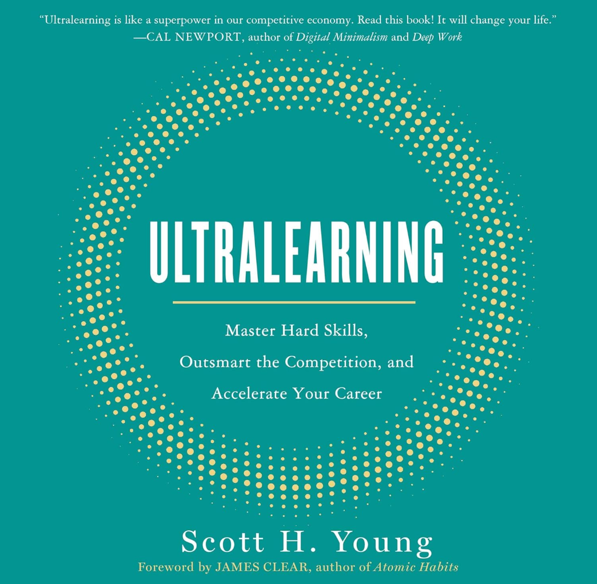

METALEARNING: FIRST DRAW A MAP. Start by learning how to learn the subject or skill you want to tackle. Discover how to do good research and how to draw on your past competencies to learn new skills more easily.
- Why do I want to learn the skill/subject?
- Either for its own sake without specific goal in mind (intellectual/intrinsic motivation) OR I want to be able to perform certain tasks/get promoted/change careers (instrumental projects)
- I need to do extensive research and conduct expert interviews to ask people who already achieved what I want to do and pass ideas by them to see if my project/learning plan can help me achieve what I want
- What skills and knowledge I need to acquire in order to be successful
- Concept: Ideas I need to understand and create mental models around them
- Facts: Things I need to memorize and be able to recall
- Procedures: Things I need to practice and ideally make them automatic
- How am I going to learn
- Benchmarking: Use common tracks such as course curriculum that people use to learn (easiest)
- Emphasize/Exclude: Focus on what matters the most for my goal in terms of concepts/facts/procedures and exclude irrelevant things for my career
10% rule is a good start to budget for planning before starting any learning project. You would be surprised how much time this would save long-term plus makes the learning more effective.
- Why do I want to learn the skill/subject?
FOCUS: SHARPEN YOUR KNIFE. Cultivate the ability to concentrate. Carve out chunks of time when you can focus on learning, and make it easy to just do it.
DIRECTNESS: GO STRAIGHT AHEAD. Learn by doing the thing you want to become good at. Don’t trade it off for other tasks, just because those are more convenient or comfortable. “Learning activities are always done with a connection to the context in which the skills learned will eventually be used.”
- Project-based learning: Focus more on “doing” than “consuming”
- Immersive learning: Surround yourself with the target environment in which the skill is practiced (or try to get as close as possible to the target environment)
- Overkill approach: Put yourself in an environment that is demanding and intense to increase the skill level acquired
DRILL: ATTACK YOUR WEAKEST POINT. Be ruthless in improving your weakest points. Break down complex skills into small parts; then master those parts and build them back together again.
- It might be a good idea to try to practice the skill without having all the prerequisites. Once you struggle to do some aspects of the skill, go learn the missing pieces and come back to the skill/project. This will save a lot of time by only covering foundational skills once they show up and become critical to continue with the project
RETRIEVAL: TEST TO LEARN. Testing isn’t simply a way of assessing knowledge but a way of creating it. Test yourself before you feel confident, and push yourself to actively recall information rather than passively review it.
- It is much more efficient to use retrieval as a mean for learning. Close the book and try to retrieve everything you learned. Only use hints when needed. This would improve retention much more than any other form of passive reviews
- It would be even better to retrieve before you acquire any knowledge. This would help us prepare for future learning. Confronting a problem you don’t yet know how to answer, your mind automatically adjusts its attentional resources to spot information that looks like a solution when you learn it later.
- Of course not all informations are equal. Some ideas/concepts are important and I know I will have to use them directly in my career -> Give them priority for retrieval. For other ideas that I know I don’t have direct use in the foreseen future but useful as a background knowledge, I would give it less priority and retrieve only concepts without going into technical calculation. This would give me enough knowledge to spot patterns and those concepts when they are encountered and where to look for to dive deeper.
- Regular test and retrieval also helps learning new information
- Tactics:
- Flash cards
- Free recall: After reading something, try recall by writing all the things you can remember on a blank sheet of paper
- Question-book: Write one question per section with a reference to where to the answer in the text. Formulating it as a question helps with retrieval when trying to recall later
- Closed-book concept mapping
FEEDBACK: DON’T DODGE THE PUNCHES. Feedback is harsh and uncomfortable. Know how to use it without letting your ego get in the way. Extract the signal from the noise, so you know what to pay attention to and what to ignore.
- More feedback information is not always better, what matters is the type of feedback
- Feedback targeted at the individual has usually harmful impact on learning
- Even if the feedback has useful information, it should be processed as a motivator tool to improve individual’s abilities
- Fear of feedback is worse than the negative aspects of feedback
- Learn to ignore feedbacks that don’t align with your vision or personal
- Types of feedback:
- Outcome feedback (are you doing it wrong?): Feedback that comes in bulk about the overall progress/state of the project. It doesn’t give you any specific feedback on separate components but tells you the overall feedback on the task such as course’s grade (A/B/C). This feedback is the most common
- Informational feedback (what are you doing wrong?): Feedback that tells you what you’re doing wrong but not how to fix it. This typically comes from direct interaction with the environment and the experimentation/practicing of the skills you’re trying to learn
- Corrective feedback (how can you fix what you’re doing wrong?): Rarest type of feedback that tells you how to fix it. Examples of sources can be coach, mentor, or a teacher
- Faster feedback is almost always preferred over delayed feedback
- Improving feedback:
- Noise cancellation: Focus on the signals and ignore noise such as random factors and individual’s selection of words.
- Difficulty sweet spot: You should make sure that you’re failing frequently but not too often and vise versa. If you’re not failing then you’re not learning, but too many failures mean that task is a lot harder that you can handle.
- Metafeedback (tells you the overall success of your strategy): One important type of metafeedback is learning rate (how fast you’re learning new things or improving). This would tell us whether we should focus on current strategy or switch to different methods.
- High-Intensity, rapid feedback: We need more feedback more often. Learning in public and putting your work online is an example of this. When you know that your work will be evaluated in a difficult environment, you tend to learn more aggressively .
RETENTION: DON’T FILL A LEAKY BUCKET. Understand what you forget and why. Learn to remember things not just for now but forever.
- How can I retain everything I learn the first week of a project so that I don’t have to relearn it in the last week of the project?
- How can I improve the longevity of the skills I learned so I can access them easily in the future?
- Mechanisms:
- Spaced repetition: There is a trade-off between the number of intervals and gap between intervals. The longer the periods between intervals -> the more weight the shot term effect would have, which may lead to forgetting what was learned in the previous session. Therefore, pick the pace where you get the best out of both.
- Anki is the perfect tool for spaced repetition
- Proceduralization: The more you practice a skill -> the more it becomes procedural (automatic) and stored where motor skills are stored. Most skills start as declarative and end up as procedural
- Focus on the core skills I use them the most and convert them towards becoming more procedural. The project is done when I successfully convert the skill to procedural
- Overlearning: Continue practicing the skill after you’re done with learning. This would move the focus from learning to doing over some time period after you finish the project’s requirement. Methods:
- Allocate extra time after you finish the project for just practice
- Add advanced study of the core skill so that you practice the core skills in a more difficult domain
- Mnemonics: Use images/maps to convert dense information
- Spaced repetition: There is a trade-off between the number of intervals and gap between intervals. The longer the periods between intervals -> the more weight the shot term effect would have, which may lead to forgetting what was learned in the previous session. Therefore, pick the pace where you get the best out of both.
INTUITION: DIG DEEP BEFORE BUILDING UP. Develop your intuition through play and exploration of concepts and skills. Understand how understanding works, and don’t recourse to cheap tricks of memorization to avoid deeply knowing things.
- The main difference between experts and beginners is that experts have built over time a lot patterns and resort to them when presented with new problems. The more you practice a skill and get to the core of it to build up intuition and connect it to other learned patterns -> The easier it is to identify patterns and apply them to the problems that show up
- Rules:
- Don’t give up on hard problems: Give yourself some time threshold to push yourself to figure it out before you seek help or consult other resources
- Prove things to understand them: To get deeper understanding of concepts, try to break it into parts and prove it from different angels. This is the best you can do to make sure you REALLY understand it and not mislead yourself
- Always start with a concrete example: Try to find at least one concrete example of the abstract concept you’re learning. The more concrete examples you can find, the better your understanding and the easier the retention. If you can’t come up with a concrete example then you haven’t understood it deep enough
- Don’t fool yourself and you’re the easiest person to fool: Explaining things and asking a lot of seemingly “dumb” questions help making sure that you understand them
- Feynman technique for deeper understanding:
- Write down the concept or problem you want to understand at the top of a piece of paper.
- In the space below, explain the idea as if you had to teach it to someone else
- If it’s a concept, ask yourself how you would convey the idea to someone who has never heard of it before.
- If it’s a problem, explain how to solve it and—crucially—why that solution procedure makes sense to you.
- When you get stuck, meaning your understanding fails to provide a clear answer, go back to your book, notes, teacher, or reference material to find the answer
EXPERIMENTATION: EXPLORE OUTSIDE YOUR COMFORT ZONE. All of these principles are only starting points. True mastery comes not just from following the path trodden by others but from exploring possibilities they haven’t yet imagined.
- Types of experimentation:
- Experimenting with learning resources: Experiment with methods/resources by rigorously immerse yourself for few days and evaluate how it is working for you. If it’s not yielding the results you expected, change course
- Experiment with technique: This would help figuring out what to learn next
- Experiment with style
- Types of experimentation:
Concrete steps for ultra-learning project
- Step 1: Do your research
- What topic you’re going to learn and its approximate scope. The research should help identify the skills/knowledge required and how wide/deep you want to go. It is recommended to make your research more constrained
- The primary resources you’re going to use. Books/courses/videos/etc. as well as mentos/coaches/peers. This will determine the starting point
- A benchmark for how others have successfully learned this subject or skill before. Almost for any subject/skill there would be people who have already learned it and share their experiences and feedback in terms of what worked and what helped them learn those skills/subjects. Use the interview method or forums to get more inputs from people ahead of you. You don’t have to follow their foot-steps but will help you save time
- Direct practice activities. You should identify where is the subject/skill going to be used (its context) in order to find ways to practice it
- Backup materials and drills. This serve as a backup in case something is not working for you and you don’t want to be overwhelmed in the beginning to go over them, but keep them as a backup
- Step 2: Schedule your time
- Time commitment per week (number of hours/week)
- When are you going to learn. Consistency is key. Shorter spaced-out sessions are better for memory retention
- Length of time devoted for the project. It is recommended to not be long. If it is too long, it is recommended to split the project into smaller sub-projects
- Put the schedule on your calendar. It is a good idea to do a pilot week with the defined schedule before committing to see if it is possible
- Step 3: Execute your plan
- METALEARNING. Have I done research into what are the typical ways of learning this subject or skill? Have I interviewed successful learners to see what resources and advice they can recommend? Have I spent about 10% of the total time on preparing my project?
- FOCUS. Am I focused when I spend time learning, or am I multitasking and distracted? Am I skipping learning sessions or procrastinating? When I start a session, how long does it take before I’m in a good flow? How long can I sustain that focus before my mind starts to wander? How sharp is my attention? Should it be more concentrated for intensity or more diffuse for creativity?
- DIRECTNESS. Am I learning the skill in the way I’ll eventually be using it? If not, what mental processes are missing from my practice that exist in the real environment? How can I practice transferring the knowledge I learn from my book/class/video to real life?
- DRILL. Am I spending time focusing on the weakest points of my performance? What is the rate-limiting step that is holding me back? Does it feel as though my learning is slowing down and that there’s too many components of the skill to master? If so, how can I split apart a complex skill to work on smaller, more manageable components of it?
- RETRIEVAL. Am I spending most of my time reading and reviewing, or am I solving problems and recalling things from memory without looking at my notes? Do I have some way of testing myself, or do I just assume I’ll remember? Can I successfully explain what I learned yesterday, last week, a year ago? How do I know if I can?
- FEEDBACK. Am I getting honest feedback about my performance early on, or am I trying to dodge the punches and avoid criticism? Do I know what I’m learning well and what I’m not? Am I using feedback correctly, or am I overreacting to noisy data?
- RETENTION. Do I have a plan in place to remember what I’m learning long term? Am I spacing my exposure to information so it will stick longer? Am I turning factual knowledge into procedures that I’ll retain? Am I overlearning the most critical aspects of the skill?
- INTUITION. Do I deeply understand the things I’m learning, or am I just memorizing? Could I teach the ideas and procedures I’m studying to someone else? Is it clear to me why what I’m learning is true, or does it all seem arbitrary and unrelated?
- EXPERIMENTATION. Am I getting stuck with my current resources and techniques? Do I need to branch out and try new approaches to reach my goal? How can I go beyond mastering the basics and create a unique style to solve problems creatively and do things others haven’t explored before?
- Step 4: Review your results
- What went right?
- What went wrong?
- What should you do next time to avoid making those same mistakes?
- Step 5: Choose to maintain or master what you’ve learned
- Option 1: Maintenance. Either find time to regularly practice it or integrate it into daily life.
- Option 2: Relearning. Relearning a subject the second time takes much less time than the first time. You just need a refresh and will get up to speed fast because the information wasn’t forgotten, but inaccessible. This strategy makes more sense for subjects that take much more time/effort to keep the subject fresh and when the use of the specific knowledge is infrequent and you know when they show up
- Option 3: Mastery. You may decide to dive deeper into the subject to pick up some branch and learn it deeply